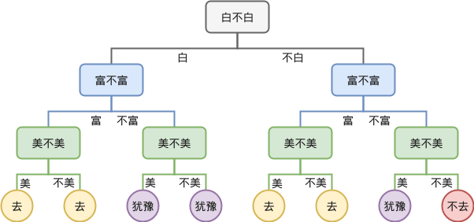
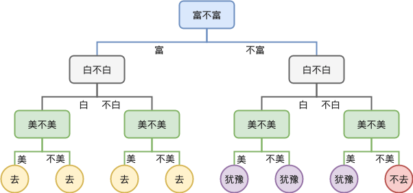
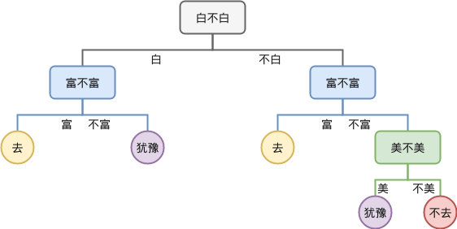
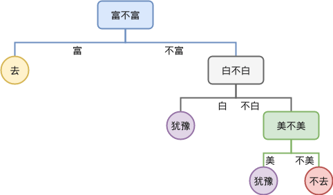

决策树案例
先从一个”相亲“案例出发直观认识决策树。已知”相亲对象的条件“样本和”是否去见“的决策，可以建立一个决策树。当有新相亲对象样本来的时候根据决策树来预测”是否去见“的决策。
相亲对象的样本以及决策如下：
| 白 | 富 | 美 | 行动 |
|---|---|---|---|
| 是 | 是 | 是 | 去 |
| 是 | 是 | 否 | 去 |
| 是 | 否 | 是 | 犹豫 |
| 是 | 否 | 否 | 犹豫 |
| 否 | 是 | 是 | 去 |
| 否 | 是 | 否 | 去 |
| 否 | 否 | 是 | 犹豫 |
| 否 | 否 | 否 | 不去 |
可以建立的一个符合以上决策的决策树如下：

显然，如果我们先考虑富不富，再考虑白不白，则可以得到不一样的一颗决策树：

所以，可以看到，如果按照不同维度的先后顺序来建立决策树，可能会得到不同的树。
观察以上决策树可以发现其中有一些叶子节点是可以合并的，合并之后，到达某个节点时就不需要进行额外的决策，例如按照“白，富，美”顺序得到的决策树合并后如下：

而按照“富，白，美”顺序的决策树合并后变成：

可以看到上面这棵树只有 4 个叶子节点，少于“白，富，美”顺序的决策树的 5 个节点。这就是决策树间最大的区别，不同决策树合并后得到树叶子节点的个数是不同的，后面我们会看到，叶子节点越少，往往决策树的泛化能力越高，所以可以认为训练决策树的一个目标是减少决策树的叶子节点 。
基于ID3算法的决策树构建
给出样本，建立一颗决策树并不困难。如何建立一颗好的决策树，才是需要考虑的问题。基于不同维度的先后判断顺序可以建立很多不同的树，到底其中哪棵树才是最好的那一颗？
直观上理解，如果某一个维度在做判断之后能够消除更大的不确定性，则优先判断该维度。以上例子中，如果先判断”富不富“，那么如果结果是”富“则不再需要更多的判断了，完全消除了不确定性。而如果先判断”白不白“，那么不管是”白“还是”不白“后续都后更多的判断，并未完全消除不确定性。
如果用数学语言描述”消除不确定性“？下面引入信息量和信息熵的概念。
信息量
信息量在是信息“多少”的度量。例如，如下两个事件：
- 事件A：巴西队获得了世界杯冠军
- 事件B：中国对获得了世界杯冠军
仅凭直觉，事件B的信息量就比事件A的信息量要大。究其原因，是因为事件A发生的概率很大，事件B发生的概率很小。所以当越不可能的事件发生了，我们获取到的信息量就越大。越可能发生的事件发生了，我们获取到的信息量就越小。那么：
- 信息量和事件发生的概率相关，事件发生的概率越低，传递的信息量越大。
- 信息量应当是非负的，必然发生的事件的信息量为零（必然事件是必然发生的，所以没有信息量。几乎不可能事件一旦发生，具有近乎无穷大的信息量。）
- 两个事件的信息量可以相加，并且两个独立事件的联合信息量应该是他们各自信息量的和。
一个随机事件 发生的概率为 则其信息量定义如下： 如果是以2为底数，单位是bit；如果以e为底数，单位是nat；如果以10为底数，单位是det；
例如，今天下雨的概率是0.5，则包含的信息量为 比特；同理，下雨天飞机正常起飞的概率为0.25，则信息量为 比特。
信息熵
信息熵（Entropy）是接收信息量的平均值，用于确定信息的不确定程度，是随机变量的均值。信息熵越大，信息就越凌乱或传输的信息越多，熵本身的概念源于物理学中描述一个热力学系统的无序程度。信息熵的处理信息是一个让信息的熵减少的过程。
假设 是一个离散的随机变量，且它的取值分别为 ，每一种取值的概率分别是 ，那么 的信息熵熵定义为: 如何理解信息熵？仍然以世界杯为例，假设世界杯32支球队获得冠军的概率完全相同，则世界杯夺冠这个事件的信息熵为: 但实际总有一些球队获得冠军的概率更大，于是计算出来的信息熵的值肯定会小于5。也就是说，在真实世界中，世界杯夺冠这件事的信息量肯定是小于5的。